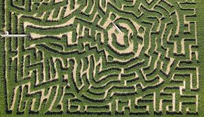

Would you like to read this spooky story?
Michael Preston and Nirvan had ventured into the corn maze expecting a fun Halloween scare. It was late, and the moonlight barely broke through the thick stalks towering above them. Shadows stretched across the narrow paths, and the rustling of leaves felt heavier than just the wind.
After what felt like hours of wandering, Nirvan was visibly shaken. "Michael, we’ve been going in circles," he whispered, his voice trembling. "We’re… we’re lost."
"Don’t worry, Nirvan," Michael said, though his own nerves were starting to fray. "We’ll find our way out. It’s just a maze, right?"
But then they heard it—a soft, deliberate footstep crunching through the dried corn husks behind them.
Michael turned, squinting down the shadowy path. "Hello? Is someone there?" His voice sounded steadier than he felt.
Silence.
Then, slowly, the footsteps began again. This time closer.
Nirvan’s composure crumbled, and he gripped Michael’s arm tightly. "Michael, I don’t like this… I don’t like this at all." His voice cracked, and tears started welling up in his eyes.
Michael swallowed hard, trying to keep it together. "Hey, look at me. It’s fine. Someone’s probably just trying to scare us, right? It’s Halloween…people do that." But he wasn’t sure he even believed his own words.
They pressed on, moving faster now. But no matter how many turns they took, they couldn’t shake the feeling of being followed. The footsteps grew louder, steady, relentless, as if whoever was following them had all the time in the world.
Suddenly, they rounded a corner and froze. A figure stood at the end of the path—a man in a wide-brimmed hat, his clothes torn and stained. He stared at them without moving, his face hidden in shadow.
Nirvan began to cry, panic flooding his face. "Michael, we have to get out of here. Please."
Michael took a deep breath, trying to sound reassuring. "We’ll go back. Just don’t look at him. We’ll…we’ll find another way."
But when they turned around, the path behind them had closed in. Corn stalks had twisted together, sealing their escape.
"Michael…he’s coming closer," Nirvan whimpered, tears streaking his cheeks as he clung to Michael’s arm.
“Stay close to me,” Michael said, his own voice finally betraying a tremor. "Just don’t look back."
The sound of metal scraping against metal rang out through the maze, each scrape closer than the last, each sound laced with cold, unfeeling purpose.
